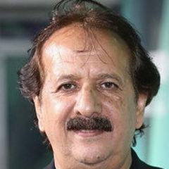
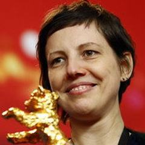

1990s – today
The New School
Global, independent and genre-bending. Festivals and home video build new audiences, digital tools arrive, and filmmakers from Tehran to Seoul to Hong Kong redefine what world cinema looks like.
Famous Directors · 249








Top films
- The Dark Knight 2008 · Christopher Nolan · IMDb 9.1
- The Fellowship of the Ring 2001 · Peter Jackson · IMDb 8.9
- Fight Club 1999 · David Fincher · IMDb 8.8
- Pulp Fiction 1994 · Quentin Tarantino · IMDb 8.8
- Inception 2010 · Christopher Nolan · IMDb 8.8
- Interstellar 2014 · Christopher Nolan · IMDb 8.7
- Spirited Away 2001 · Hayao Miyazaki · IMDb 8.6
- Se7en 1995 · David Fincher · IMDb 8.6
- Terminator 2: Judgment Day 1991 · James Cameron · IMDb 8.6
- Pretty Village, Pretty Flame 1996 · Srdjan Dragojević · IMDb 8.6
- City of God 2002 · Fernando Meirelles · IMDb 8.6
- Django Unchained 2012 · Quentin Tarantino · IMDb 8.5
- The Prestige 2006 · Christopher Nolan · IMDb 8.5
- Parasite 2019 · Bong Joon-ho · IMDb 8.5
- Whiplash 2014 · Damien Chazelle · IMDb 8.5
- Inglourious Basterds 2009 · Quentin Tarantino · IMDb 8.4
- Memento 2000 · Christopher Nolan · IMDb 8.4
- Good Will Hunting 1997 · Gus Van Sant · IMDb 8.4
- Your Name 2016 · Makoto Shinkai · IMDb 8.4
- Capernaum 2018 · Nadine Labaki · IMDb 8.4
- Princess Mononoke 1997 · Hayao Miyazaki · IMDb 8.3
- Oldboy 2003 · Park Chan-wook · IMDb 8.3
- A Separation 2011 · Asghar Farhadi · IMDb 8.3
- To Live 1994 · Zhang Yimou · IMDb 8.3
- Incendies 2010 · Denis Villeneuve · IMDb 8.3
- American Beauty 1999 · Sam Mendes · IMDb 8.3
- Requiem for a Dream 2000 · Darren Aronofsky · IMDb 8.3
- Joker 2019 · Todd Phillips · IMDb 8.3
- We Are Not Angels 1992 · Srdjan Dragojević · IMDb 8.3
- Zora 2008 · Dalibor Matanić · IMDb 8.3
- The Hunt (2012) 2012 · Thomas Vinterberg · IMDb 8.3
- There Will Be Blood 2007 · Paul Thomas Anderson · IMDb 8.2
- Close-Up 1990 · Abbas Kiarostami · IMDb 8.2
- Howl's Moving Castle 2004 · Hayao Miyazaki · IMDb 8.2
- A Brighter Summer Day 1991 · Edward Yang · IMDb 8.2
- Sátántangó 1994 · Béla Tarr · IMDb 8.2
- Reservoir Dogs 1992 · Quentin Tarantino · IMDb 8.2
- Kill Bill: Vol. 1 2003 · Quentin Tarantino · IMDb 8.2
- No Country for Old Men 2007 · The Coen Brothers · IMDb 8.2
- Oppenheimer 2023 · Christopher Nolan · IMDb 8.2
- Pan's Labyrinth 2006 · Guillermo del Toro · IMDb 8.2
- Children of Heaven 1997 · Majid Majidi · IMDb 8.2
- Prisoners 2013 · Denis Villeneuve · IMDb 8.2
- Snatch 2000 · Guy Ritchie · IMDb 8.2
- 1917 2019 · Sam Mendes · IMDb 8.2
- The Voice of Hind Rajab 2025 · Kaouther Ben Hania · IMDb 8.2
- Sky Hook 2000 · Srdjan Dragojević · IMDb 8.2
- 13th 2016 · Ava DuVernay · IMDb 8.2
- Amélie 2001 · Jean-Pierre Jeunet · IMDb 8.2
- Yi Yi 2000 · Edward Yang · IMDb 8.1
- Gone Girl 2014 · David Fincher · IMDb 8.1
- Fargo 1996 · The Coen Brothers · IMDb 8.1
- The Big Lebowski 1998 · The Coen Brothers · IMDb 8.1
- The Handmaiden 2016 · Park Chan-wook · IMDb 8.1
- Raise the Red Lantern 1991 · Zhang Yimou · IMDb 8.1
- Memories of Murder 2003 · Bong Joon-ho · IMDb 8.1
- Farewell My Concubine 1993 · Chen Kaige · IMDb 8.1
- 12 Years a Slave 2013 · Steve McQueen · IMDb 8.1
- I'm Still Here 2024 · Walter Salles · IMDb 8.1
- The Color of Paradise 1999 · Majid Majidi · IMDb 8.1
- Before Sunrise 1995 · Richard Linklater · IMDb 8.1
- Before Sunset 2004 · Richard Linklater · IMDb 8.1
- The Grand Budapest Hotel 2014 · Wes Anderson · IMDb 8.1
- Lock, Stock and Two Smoking Barrels 1998 · Guy Ritchie · IMDb 8.1
- Trainspotting 1996 · Danny Boyle · IMDb 8.1
- Collective 2019 · Alexander Nanau · IMDb 8.1
- Wild Tales 2014 · Damián Szifron · IMDb 8.1
- Magnolia 1999 · Paul Thomas Anderson · IMDb 8.0
- The Straight Story 1999 · David Lynch · IMDb 8.0
- Three Colours: Red 1994 · Krzysztof Kieślowski · IMDb 8.0
- Dogville 2003 · Lars von Trier · IMDb 8.0
- Kill Bill: Vol. 2 2004 · Quentin Tarantino · IMDb 8.0
- In the Mood for Love 2000 · Wong Kar-wai · IMDb 8.0
- Secrets & Lies 1996 · Mike Leigh · IMDb 8.0
- Nobody Knows 2004 · Hirokazu Kore-eda · IMDb 8.0
- Amores perros 2000 · Alejandro G. Iñárritu · IMDb 8.0
- The Revenant 2015 · Alejandro G. Iñárritu · IMDb 8.0
- Titanic 1997 · James Cameron · IMDb 8.0
- Central Station 1998 · Walter Salles · IMDb 8.0
- Portrait of a Lady on Fire 2019 · Céline Sciamma · IMDb 8.0
- Blade Runner 2049 2017 · Denis Villeneuve · IMDb 8.0
- Dune 2021 · Denis Villeneuve · IMDb 8.0
- Quo Vadis, Aida? 2020 · Jasmila Žbanić · IMDb 8.0
- Slumdog Millionaire 2008 · Danny Boyle · IMDb 8.0
- La La Land 2016 · Damien Chazelle · IMDb 8.0
- Black Swan 2010 · Darren Aronofsky · IMDb 8.0
- Spring, Summer, Autumn, Winter... and Spring 2003 · Kim Ki-duk · IMDb 8.0
- Sicko 2007 · Michael Moore · IMDb 8.0
- Citizenfour 2014 · Laura Poitras · IMDb 8.0
- Toto and His Sisters 2014 · Alexander Nanau · IMDb 8.0
- Elite Squad 2007 · José Padilha · IMDb 8.0
- The Wounds 1998 · Srdjan Dragojević · IMDb 8.0
- The Celebration 1998 · Thomas Vinterberg · IMDb 8.0
- Mommy 2014 · Xavier Dolan · IMDb 8.0
- Perfect Blue 1997 · Satoshi Kon · IMDb 8.0
- Dead Souls 2018 · Wang Bing · IMDb 8.0
- Waltz with Bashir 2008 · Ari Folman · IMDb 8.0
- Amour 2012 · Michael Haneke · IMDb 7.9
- Boogie Nights 1997 · Paul Thomas Anderson · IMDb 7.9
- Mulholland Drive 2001 · David Lynch · IMDb 7.9